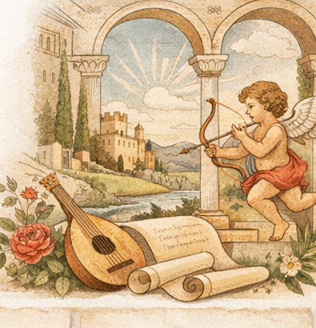

Author and Work
Pietro Bembo, his editorial programme, and Gli Asolani
An introduction to Bembo, the intellectual and literary context of the work, and the general structure and themes of Gli Asolani.
Pietro Bembo
A Digital Scholarly Edition
A digital edition devoted to the textual, philological, and material history of Gli Asolani, through the comparison of manuscript and printed witnesses.

Author and Work
An introduction to Bembo, the intellectual and literary context of the work, and the general structure and themes of Gli Asolani.
Printed Tradition
A section devoted to the early printed editions of Gli Asolani, the modern critical edition by Giorgio Dilemmi, and its editorial criteria.
Digital Edition
Documentation of the digital edition, including TEI markup choices, parallel segmentation, diplomatic transcription, EVT visualisation, and critical apparatus.